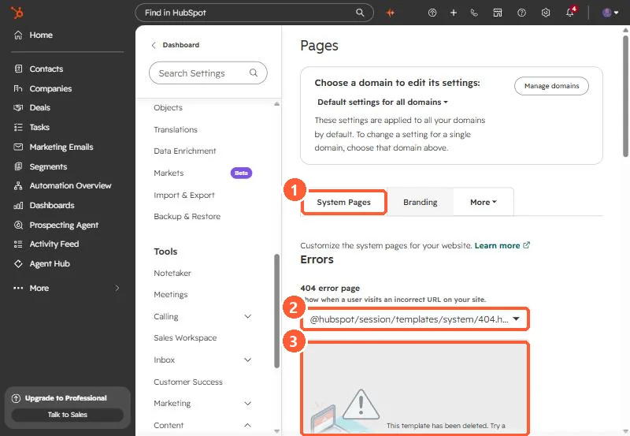
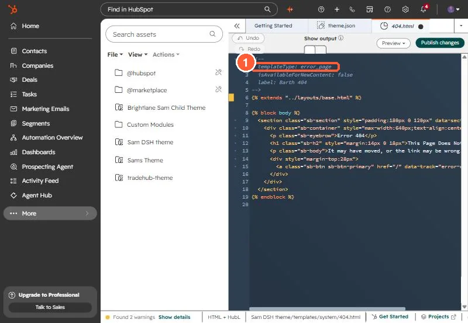

Short answer
A theme should ship system templates for errors (error_page, used for 404 and 500), password_prompt_page, search_results_page, and the email subscription pages (email_subscription_preferences_page, email_backup_unsubscribe_page, email_subscriptions_confirmation_page). Shipping them is half the job. You also assign them in Settings > Content > Pages > System Pages. In my portal that tab showed the 404 page set to a @hubspot/session template with the message that it had been deleted.
1. What I found
While checking my theme, I opened System Pages. The 404 dropdown showed @hubspot/session/templates/system/404.html with the message "This template has been deleted." The 500 and search results pages were set the same way. Nothing else in the portal had warned me.


2. The template types
HubSpot's developer docs list these system template types. The value goes in the template's annotation as templateType:
error_page: 404 and 500 pages.password_prompt_page: shown before a password protected page.search_results_page: the built-in site search listing.email_subscription_preferences_page: must contain theemail_subscriptionstag.email_backup_unsubscribe_page: must contain theemail_simple_subscriptiontag.email_subscriptions_confirmation_page: whereunsubscribe_link_allsends people.- Membership pages (login, register, reset) if you use memberships.
The three email types need the _page suffix. I learned that from the upload validator, covered in theme upload validation errors.


3. Assign them
- Go to Settings > Content > Pages and click System Pages.
- Use the dropdowns for 404 error page, 500 error page, Password prompt page and Search results page.
- Click Save.
HubSpot's article notes that custom system templates can be selected for any domain connected as a primary domain, and that Content Hub Starter uses HTML + HubL templates for system pages instead of drag and drop.
4. Test it
Visit a made-up URL on your domain. If you get HubSpot's generic page instead of yours, the setting did not save or the domain has its own setting. The domain picker at the top of that settings page switches between the default and each domain.